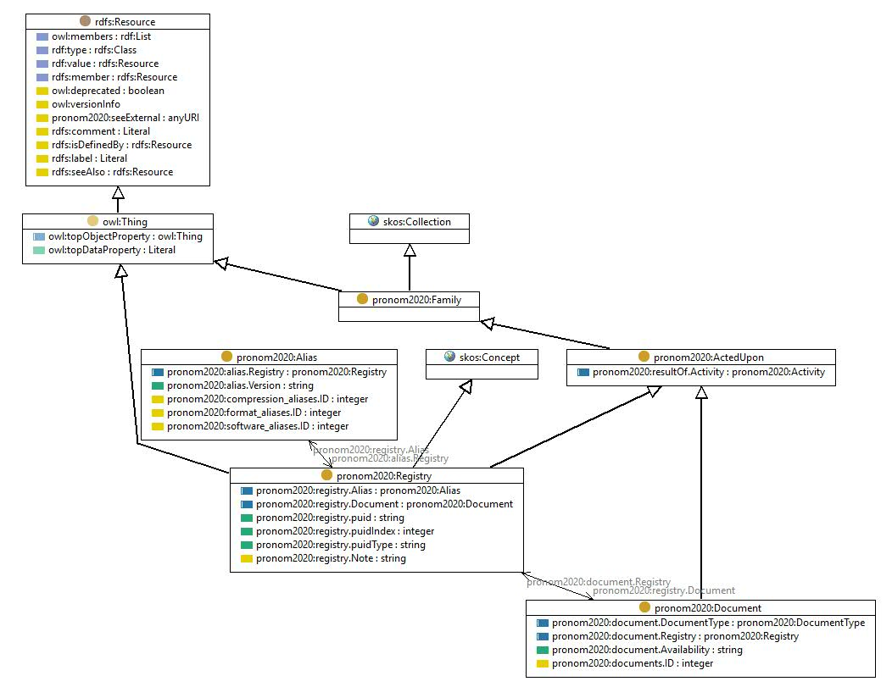

http://data.nationalarchives.gov.uk/formatregistry/def/Registry
Class pronom2020:Registry

rdf:type
owl:Class
rdfs:comment
The superclass of all registry things, aka things that have been given a PUID
rdfs:label
Registry
rdfs:subClassOf
http://www.w3.org/2004/02/skos/core#Concept
owl:Thing
skos:prefLabel
Registry
skos:topConceptOf
pronom2020:PRONOM
References
as rdfs:domain (
pronom2020:registry.puidType
,
pronom2020:registry.puidIndex
,
pronom2020:registry.Alias
,
pronom2020:registry.Document
,
pronom2020:result of activity
,
pronom2020:registry.Note
,
pronom2020:registry.puid
)
as rdfs:range (
pronom2020:for RegistryThing
,
pronom2020:document.Registry
,
pronom2020:activity on
)
as rdfs:subClassOf (
pronom2020:FileFormat
,
pronom2020:Encoding
,
pronom2020:CompressionType
,
pronom2020:Software
)
Generated with
TopBraid Composer
by
TopQuadrant, Inc.